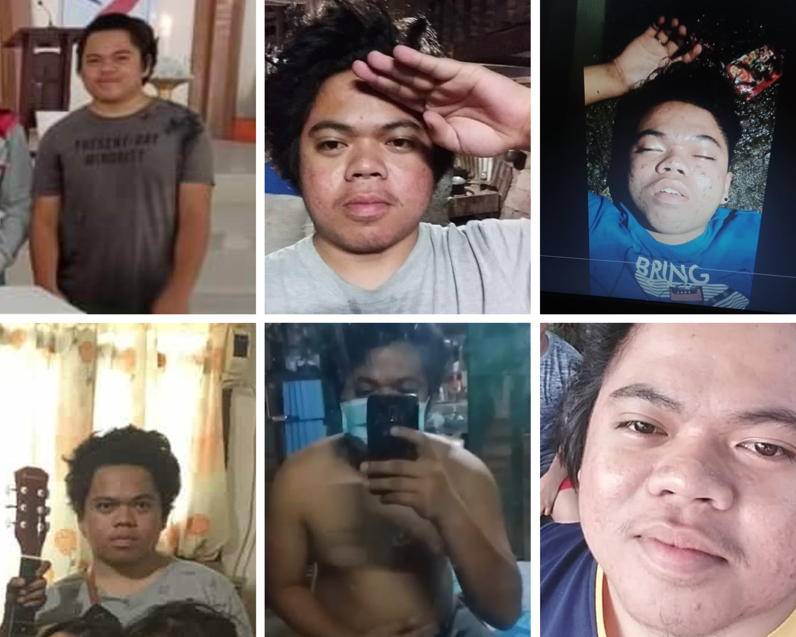
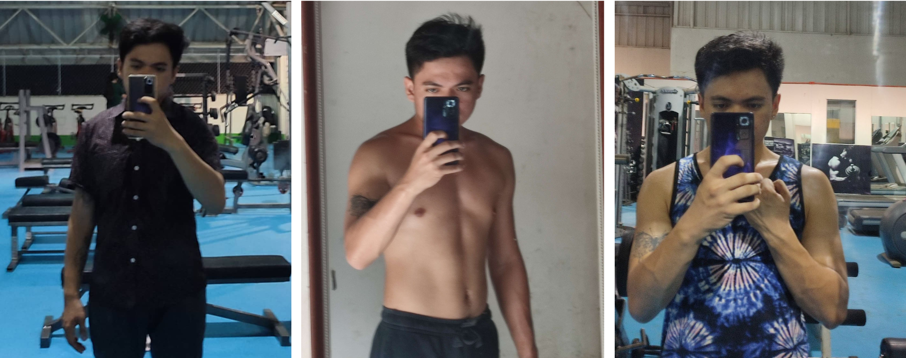
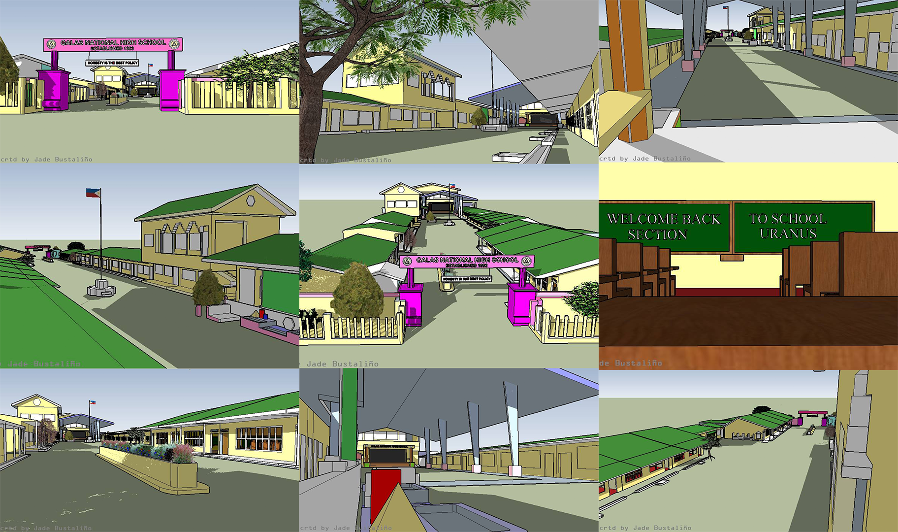
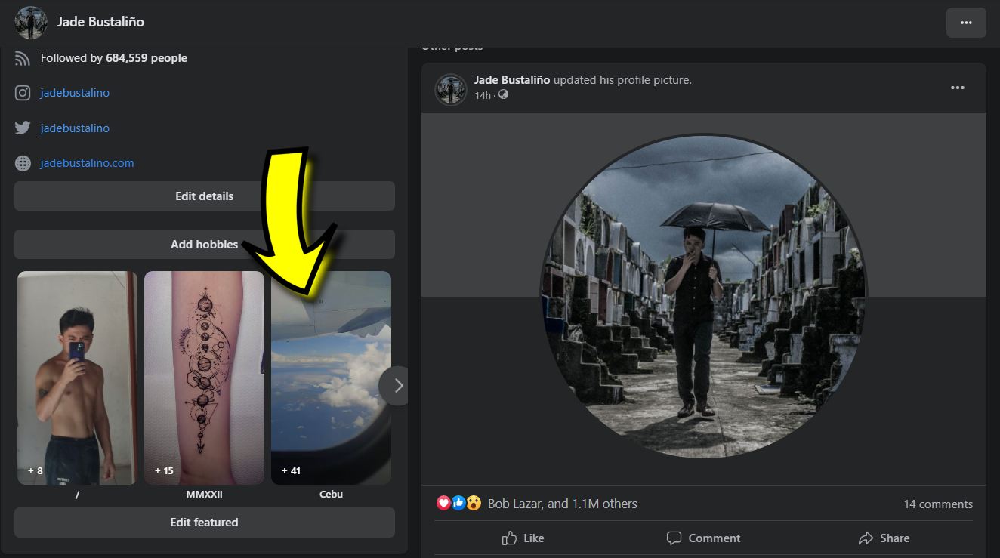

Plano
Nganong mag plano ta? Nganong magplano-plano paman ta nga pwde ra baya ta mo mata nga buhaton nato unsay mahunahunaan nato diba?
Years ago nga tambok kaayo ko, walay koy angay, mura ko og tambutso, bisyo diri, bisyo didto og dili nako masabtan og dili na mao akoang gipanghunahuna. Mao toy resulta sa akoang walay pag-plano sa kinabuhi. Kailangan ta magplano kay kung wala tay plano, wala ta kabalo kung unsay buhaton nato taga-adlaw, wala ta kabalo kung unsa og asa atoang padulngan kung wala tay plano.

Unsay planohon? Ag nagsugod palang ko og plano sa akoang kinabuhi nga ganahan ko og kabagohan, nangita ko og problema. Gi una nako akoang kaugalingon. Gipangutana nako kung unsa akoang problema sa akoang kaugaligon? Nagpangutana ko kung unsaon nako pagsulbad ang akoang mga problema sa kaugalingon?
Unsa man akoang mga problema?
- Daghan kaayo ko og gipanghunahuna nga dili na mao.
- Maglisud ko og tulog.
- Wala koy alaga sa akoang kaugalingon.
- Nagpasulabi nako sa akoang bisyo.
- Tambok na kaayo ko.
Unsaon nako pagsulbad akoang problema nga daghan kaayo ko'g gipanghunahuna? Kung e-distract nako akoang kaugalingon sa dula, sa social media, sa bisyo masulbad kaha? Oo, temporarily so dili mao ang solusyon. Maong akoang unang gibuhat, giatubang nako akoang mga gipanghunahuna. Unang giplano nako nga tagaan nako og oras akoang kaugalingon maong naka-desisyon ko nga mo undang sa ko og skwela og mao to ang best decision nga nabuhat nako sa tibuok nakong kinabuhi.
Unsaon nako paghatag og oras akoang kaugalingon? Kay dili man ko makatulog, nakahunahuna ko nga mag-walking alas 6 sa buntag padulong sa spot namo sa akoang mga barkada nga daplin sa dagat. Naga walking ko nga walay tulog, walay music, walay cellphone. Naga-walking ko nga gabitbit og notebook og ballpen. Gipangsulat nako akoang mga gipanghunahuna ag naglakaw ko. Gisulat nako akoang mga problema og kung unsa kahay solusyon? Kung naa bay solusyon?
Wala nako nasulbad akoang problema nga daghan kaayo kong gipanghunahuna kay sa mga pila ka adlaw, simana og bulan nako og pagatubang sa akoang hunahuna nagtuo ko nga mao ni ang bunga sa uban nakong problema.
Unsa may lain nakong problema? Maglisud ko og tulog nga maabtan nako og alas 9 sa buntag, alas 12 sa udto, alas 5 sa hapon ayha makatulog.
Nganong maglisud man ko og tulog? Kay daghan kaayo ko og gipanghunahuna og gina-distract ra nako akoang kaugalingon sa mga butang nga dili solusyon sa akoang mga problema.
Unsaon nako pag-undang akoang bisyo? Dili nako maundangan kay nagabisyo ko kay permi ko ga-overthink, kay pinaagi sa pagbisyo malikayan nako og pinaagi sa pagpanigarilyo mogaan akoang dughan.
Unsa pa may lain nakong problema? Tambok kaayo ko. Nganong tambok naman kaayo ko? Sige ko'g inom og kaon.
Unsa man akoang buhaton? Dapat magpaniwang ko maong mag-jogging ko kay kung mag-jogging ko, kung maghago ko, kung magpakalisud ko, mapugsan ko nga dili nako magpasulabi sa akoang bisyo kay dili lalim ang mag-jogging unya sayangon ra nako akoang kahago sa inom?
Kay baliktad naman akoang oras, kay maglisud man ko og tulog, alas 5 sa buntag magsuot nako og sapatos maskin dili ko ganahan, maskin kapoy, maskin bug-at akoang dughan, maskin wala koy tulog, naga-walking og naga-jogging ko gikan diri sa Barangay Galas padulong sa Dipolog Boulevard.
Kay kapoy kaayo akoang lawas nahinay-hinay na nako og sulbad akoang problema nga maglisud ko og tulog. Kadugayan nausob na dayun nako akoang schedule sa pag-jogging nga instead 5 AM nahimo na nako og 5 PM.
Nasulbad nako akoang problema nga tambok kaayo ko, at the same time nasulbad akoang problema nga maglisud ko og tulog, at the same time nahinayhinay na nako og sulbad akoang bisyo nga halos taga-adlaw.

Wala ko niundang og atubang sa akoang hunahuna og nagasulat ko sa akoang mga nabuhat og permi ko nagapangutana kung unsay mahitabo kung ipadayun nako ni?
Nasulbad ba nako akoang problema nga dili na mao akoang mga gipanghunahuna? Oo kay nahinayhinay na nako og tarong akoang kinabuhi, nahinayhinay na nako og disiplina akoang kaugalingon og natagaan na nako og value akoang kaugalingon. Nahinay-hinay na og ka-positibo akoang mga gipanghunahuna, mas nasabtan nako akoang kaugalingon og mas nasabtan nako akoang sitwasyon kay sa pagbuhat sa akoang mga plano naa nakoy nakita nga kabagohan sa akoang kaugalingon.
Maong kung magplano ka, unha sa imoang kaugalingon.
Kung sige ka og overthink? Atubanga imoang gipanghunahuna, sulata imoang gipanghunahuna.
Mahadlok ka atubangon imoang gipanghunahuna? Mas mahadlok dapat ka magpabilin kung asa ka, mas mahadlok dapat ka kung walay kabagohan sa imoang kaugalingon.
Maglisud ka og tulog? Paghago, pag-exercise.
Tambok kaayo ka? Pagbuhat. Ayaw paghulat nga ma-motivate ka, kay dili nimo ma-feel ang motivation kung wala kay action.
Kitang tanan lahi-lahi ta og problema pero unsaon nato pagsulbad sa atoang mga problema kung atoang likayan? Kung dili nato atubangon? Ako naabtan pako og mga pila katuig maong makaingun ko nga dili siya dali, dili siya sayon, niagi ko og mga kasakit, kaguol og kalagot ayha ko naabot sa akoang mental state karon.
Maong magplano ta kung unsay gamitan nato sa atoang oras. Pagpangutana imoang kaugalingon kung unsa imoang passion? Ag sa grade 8 ko ganahan ko mahimo og architect maong pagka-bakasyon, nagpractice ko'g gamit og SketchUp. Usa ka software nga ginagamit sa mga architect para maghimo og 3D models. Wala koy knowledge pero passionate ko nga makakat-on maong nagkat-on ko, nagbasa ko, nagtan-aw ko'g tutorials, akoang gi-sketch amoang skwelahan og naabtan ko og usa ka bulan.

Ag pagka senior high nako ganahan ko mahimo og programmer maong ag sa pag-undang nako nag self-taught ko og programming og na-convert nako akoang knowledge into monetary equivalent maong naka adto ko og Cebu gamit akoang kwarta. Og naa koy basic knowledge sa paghimo og website maong nahimo nako ni nga website.

Maong magplano ta, unhon sa nato atoang kaugalingon, tagaan sa nato og oras atoang kaugalingon para makahunahuna. Mag self-love ta, dili selfish ang self-love. Pagplano nga mag-save ka og kwarta para igasto sa imoang kaugalingon. Palit ka og shampoo, sabon, toothpaste, pahumot, sanina, sapatos. Pagplano nga mabuntag sayo maghipos ko sa akoang higdaanan, manghilam-os ko, mag brush sa akoang ngipon, mag-walking ko, mag-jogging, mo kaon ko og insakto, dili nako pasagdaan akoang kaugalingon og higugmaon nako akoang kaugalingon.
Kay kung magplano ta, ma-practice pud nato ang pagbalibad. Kay dili magsilbi kung permente rata mo sugot sa tanang butang. Kung naay mo hagit og laag o inom, makabalibad ta kay kabalo tang naa tay mas importanteng butang nga buhaton karong adlawa. Kung naay mangutang, makabalibad ta kay kabalo ta nga naa tay mas importanteng gamitan sa atoang kwarta.
Maong planohon nato ang adlaw nga atoang ganahan og paghimo og reward system sa imoang mga plano nga maka-motivate sa imoa like for example: Kung mahuman nako ang 70% sa akoang mga plano karong adlawa, e-reward nako akoang kaugalingon og 1 hour para magdula, para mag social media, mo laag ko or mo kaon ko. Planohon nato unsay buhaton nato paghuman sa klase o paghuman sa trabaho. Pwde ka mag-invest og knowledge pinaagi sa pagbasa og libro og pwde ka mag-learn og new skill.
Ang problema man gud, comfortable nata mo ingun nga "Wala koy talent, wala koy skill." Gipanganak ba diay ka nga naa nakay talent diretso? Skill diretso? Wala. Maong pagkat-on og laing butang og mangita dayun ka og pamaagi kung unsaon nimo na pag-convert imoang skill, imoang talent into monetary equivalent. E-take advantage nato ang internet kay halos naa tanan sa internet, pila ray pag-search og "How to learn? How to earn?"
Kung studyante paka og maningkamot ka mangita og pamaagi para makatabang ka sa imoang ginikanan. Malipay ba imoang ginikanan? Syempre.
Ang problema man gud ganahan ta og naa dayun resulta, ganahan ta nga makakwarta diretso. Mao ganing niadto ta sa skwelahan og mga pila katuig para magamit nato atoang mga nakat-unan para mo trabaho og para makakwarta ta.
Ang problema man gud magplano ta nga mo mata og sayo maong mag-alarm ta pero pagka-ugma e-snooze ra nato ang alarm.
Maong mag-set ta og priority, e-prioritize nato atoang ugma kaysa sa karon. E-sakripisyo nato atoang karon, para sa atoang ugma.
Maong pagplano, ayha ta matulog, magplano ta kung unsa atoang buhaton ugma, planoha kung unsa imoang gamitan sa imoang oras og dapat naa tay self-awareness, awareness nga kaya natong buhaton atoang mga plano. Hinay-hinay lang ta sa atoang kaugalingon.
Dayun buhata imoang plano kay ang plano nga wala sa buhat, plano ra. Puhon, makita ra nato ang sukli sa atoang mga kahago. Unta makita nato ang kalinaw nga kailangan nato sa matag-adlaw.